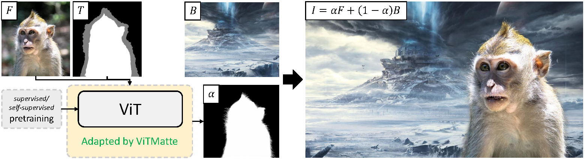
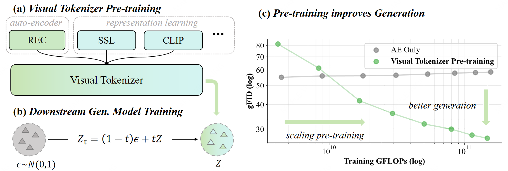
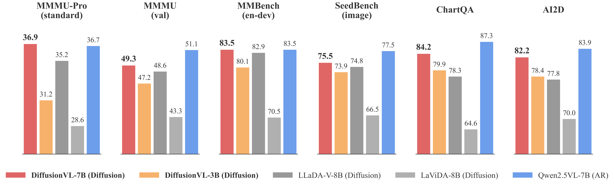
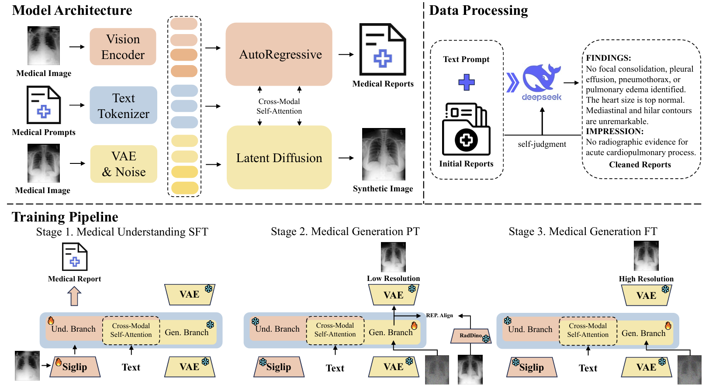
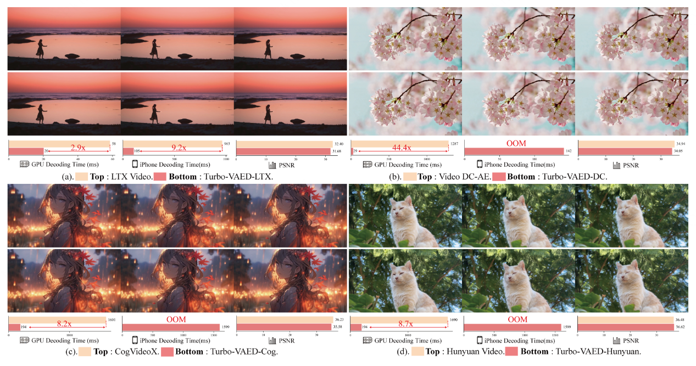
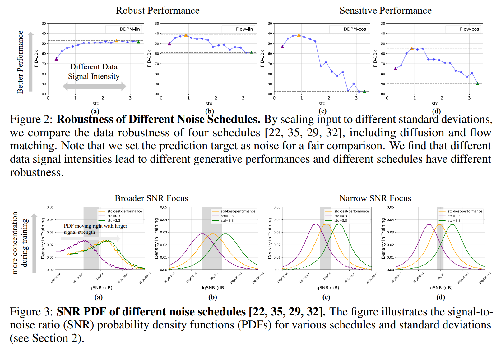
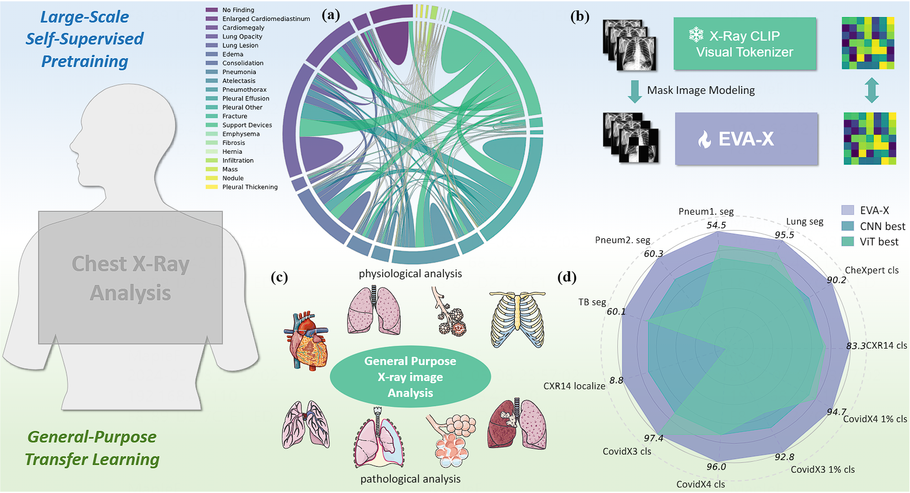
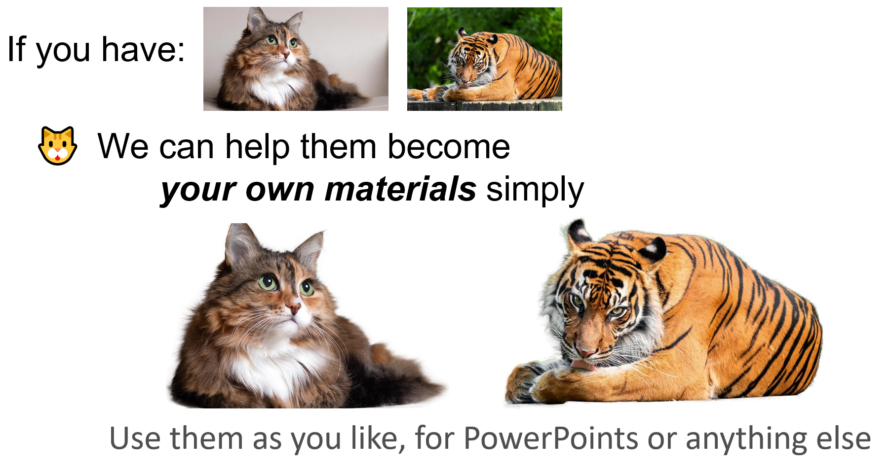
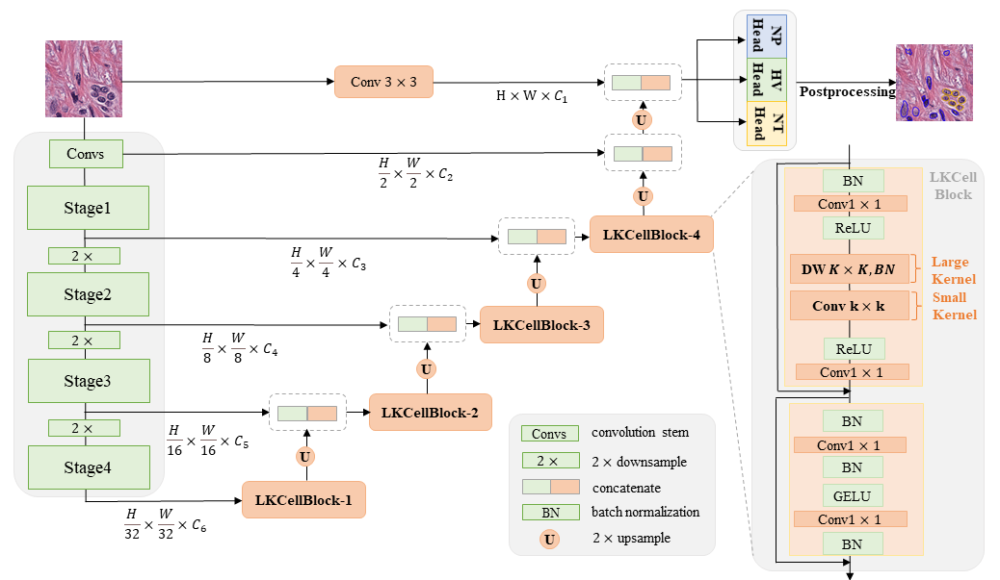
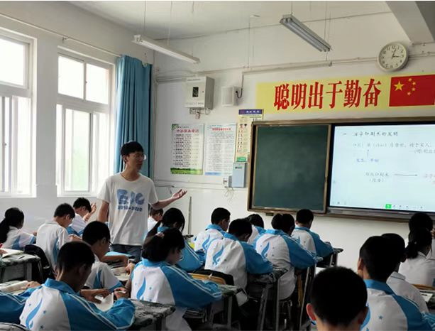

Reconstruction vs. Generation: Taming Optimization Dilemma in Latent Diffusion Models
CVPR 2025 Oral. Accepted with full score.
Ranked 11th among the most influential CVPR 2025 papers by Paper Digest.
Ph.D. researcher · HUST
I build generative models and the visual representations that make them work.
I am a third-year Ph.D. student at Huazhong University of Science and Technology, supervised by Prof. Xinggang Wang, and expected to graduate in 2027. My work spans generative models, image matting, and representation learning.
Research
Work across visual generation, efficient learning, and representation.
CVPR 2025 Oral. Accepted with full score.
Ranked 11th among the most influential CVPR 2025 papers by Paper Digest.

My model · 50M+ downloads* Equal contribution








Recognition
2024
国家奖学金
Awarded to only 0.2% of candidates nationwide.
2022
中国大学生“互联网+”创新创业大赛 国赛金奖
About 300 Gold Awards from 3.4 million projects, a 0.009% success rate.

Beyond research
I spent one year as a volunteer teacher in Lincang, Yunnan Province, representing Huazhong University of Science and Technology. I taught history at Linxiang No. 1 Middle School.
Read the news coverage